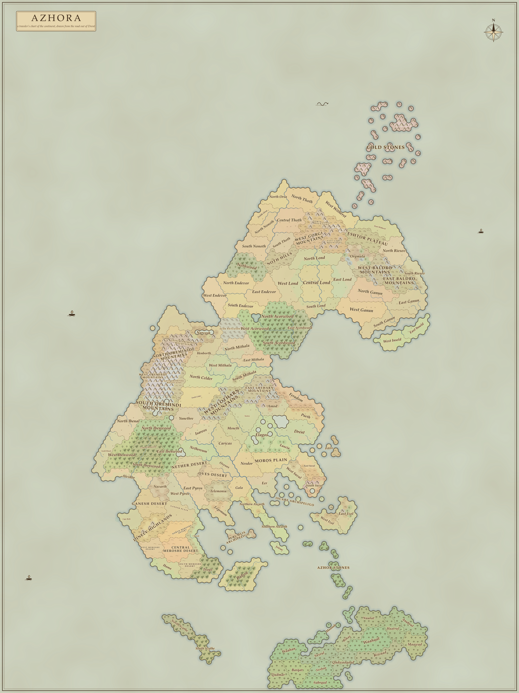

Tidehaven Landing
A goblin attack threatens the village. Step ashore and speak to Mara, the harbourmaster at the head of the pier.
0 places discovered J Journal
The warning bell carries across the water.
Goblins have attacked Tidehaven’s northern road.
A mercenary in plain cloth, with one simple sword.
Step ashore. The village needs a hand.
3 raiders remaining
Acorns in your satchel · 0 / 5
Across the Caloss
Press J
Wait for a bite.
Luscia lies across the Caloss.
Every region you have reached stays open to explore.
Orris warns of a dark lord at Cape Thalmagar, far to the northwest beyond the Oremindi. His orcs and the goblins they arm are pressing south through the mountains. The cape belongs to the far end of the journey; it is not accessible in this region.
To Quartermaster Corvan, Ambroni army, the Avrel clearing.
Your introduction to army service is carried in your satchel, handed over at the head of the pier by Mara, the harbourmaster.
Beyond these woods lie Luscia, the Moros Plain, and every province of an empire that is coming apart.

A traveler’s chart of Azhora · Scroll to zoom · Drag to explore · M or Esc to close
Drent, on the northeastern coast, is where the journey begins at Tidehaven. The playable road runs south-west through Drent’s forest, crosses the Caloss into Luscia, and then divides for the Moros Plain and East Suval.
WASD or arrows to walk. Q / E for forward diagonals.
Shift or hold Tab to run. Space to jump.
Right-drag to turn the camera; scroll to zoom.
F to talk, gather acorns / sticks / pawpaws, or use the repair bench.
I opens your satchel: select a weapon to equip, or cooked fish / pawpaws to eat.
Pawpaws restore up to 25 health; cooked fish restores up to 40.
Bran teaches pond fishing; Hollis teaches river fishing. F casts and reels.
A tinderbox and 2 sticks light a fire. F at the fire opens cooking.
J for the journal. M for the map. K for your skills.
B observes a bird, once Lakota in Tidehaven has shown you how.
F11 or Alt+Enter switches fullscreen / windowed mode.
Left-click or R to swing; time another press for a combo.
C and a direction to dodge. Without a direction, step back.
Amber on the ground means a goblin is winding up.
Dodge the swing, then counter while it recovers.
Landed hits wear weapons; missed swings do not.
Repair free at any bench: in the village and each road district.
Broken swords need repair; snapped sticks are used up.
Save after stepping ashore, outside active fights. Your lessons, woodland discoveries, favors, gathering, campfires, satchel, and weapon condition are kept. Testing leaves your saved adventure unchanged.
Explore the four regions. Travel shortcuts complete earlier road errands so you can test the selected district. Testing does not replace a saved road checkpoint.
Gives a rod, tinderbox, five acorns, six sticks, and two raw fish; restores health and weapons. Your existing progress with Lysa is kept.
Testing is visibly marked. Close and reopen Azhora to begin a fresh normal run.The villagers pull you clear of the road. Your letter and completed lessons are safe.
Watch for the amber windup. Dodge sideways with C, then strike while the goblin recovers. Stamina returns when you take a breath.
Full health · Restart at the woodland bell